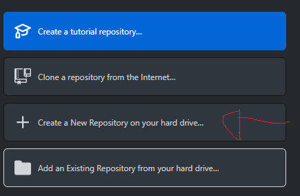
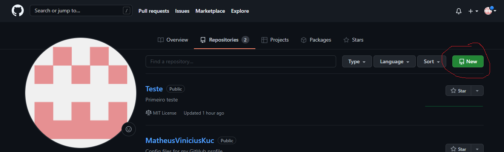
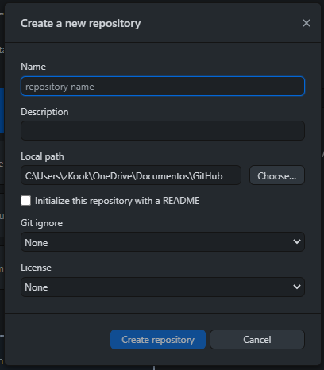
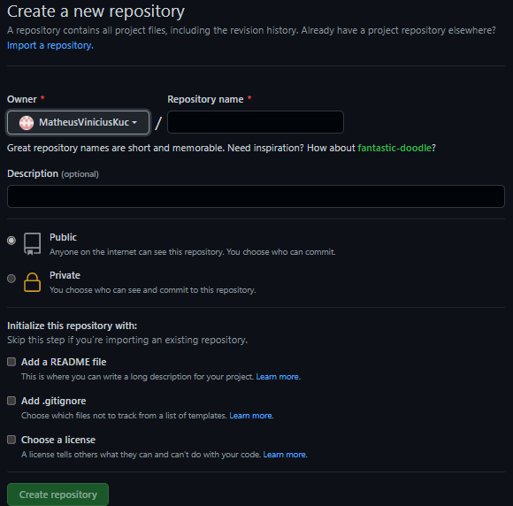
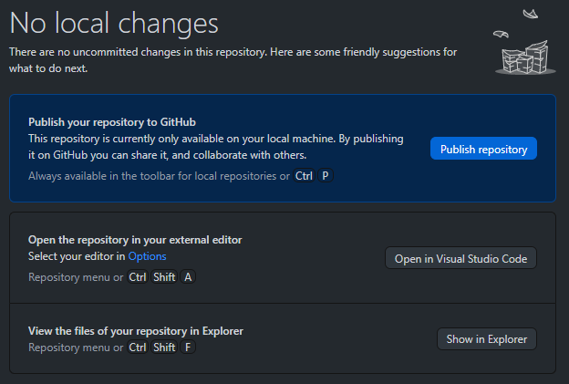
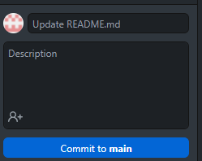
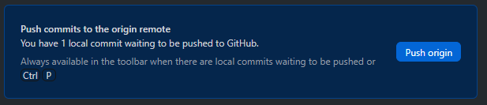
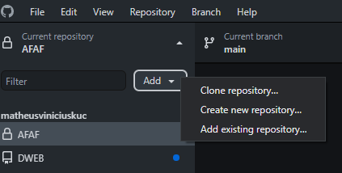

Sistema que tem por objetivo realizar o controle de versões de um código ou documento, onde é possível ser controlada por um desenvolvedor ou uma equipe de desenvolvedores.
Software livre de versionamento, onde cada diretório de trabalho é um repositório com um histórico completo e habilidoso totalmente com o acompanhamento das revisões, onde não depende de acesso a uma rede ou um servidor local.

Plataforma de hospedagem de código-fonte e arquivos com controle de versão.
Primeiro entra no Github Desktop ou no próprio site e cria a conta para poder fazer seus trabalhos.
Depois disso você vai clicar em 'Create a New Repository on your har drive' se estiver no GitHub Desktop, ou no site você clica no 'New'.
 Quando você chegar nessa parte basta preencher todos os dados que se pede.
 Logo após ter criado o repositório você terá que lançar ele no site do Github, mas se você já fez isso no próprio site não há necessidade desse passo, onde você clica no que estiquer azul, ou usa Ctrl + P.
Toda vez que você fizer uma alteração no seu documento para poder criar uma nova versão e assim salva-lá precisa fazer o seguinte passo no GitHub Desktop.
 Primeiro você deve criar um repositorio no próprio site do Github, e logo após isso você clica em 'Add' e 'Clone Repository' e quando achar o repositorio clica em 'clone'.
Você joga todos os arquivos que quer nesse repostivo na pasta do Githun em 'Documentos/GitHun/nome_do_repositorio'